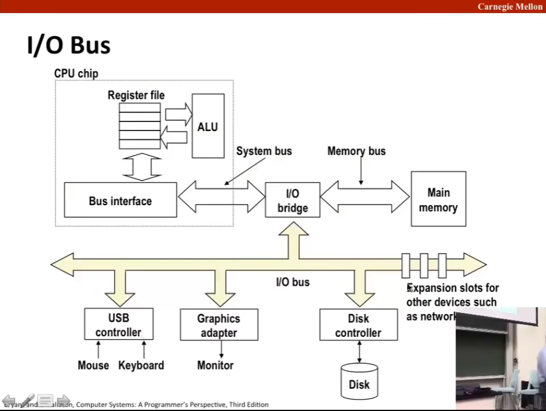
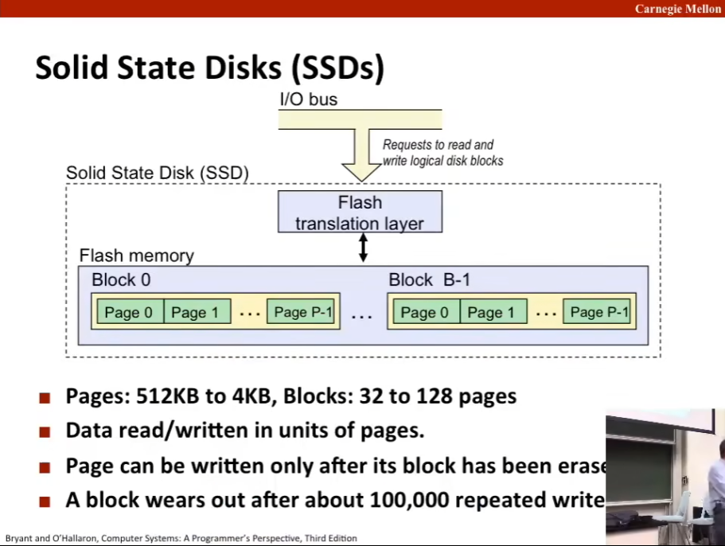

L11 The Memory Hierarchy
Source: https://www.bilibili.com/video/BV1iW411d7hd?p=11
Today（存储器层次结构 memory hierarchy）
存储技术及趋势 Storage technologies and trends
引用的本地性 Locality of reference
存储器层次结构中的缓存 Caching in the memory hierarchy
随机访问存储器（RAM, random-access memory）
关键特性 Key features
一般被打包成芯片样式 RAM is traditionally packaged as a chip
基本的存储单位称为单元（cell），一个单元存储一个比特 Basic storage unit is normally a cell (one bit per cell)
多个 RAM 构成一个内存 Multiple RAM chips form a memory
RAM 分为两种 RAM comes in two varieties:
SRAM (Static RAM)
DRAM (Dynamic RAM)
（SRAM 和 DRAM 是根据存储单元实现方式来区分的）
SRAM 和 DRAM 异同比较总结
| Trans. per bit | Access time | Needs refresh? | Needs EDC? | Cost | Applications | |
|---|---|---|---|---|---|---|
| SRAM | 4 or 6 | 1X | No | Maybe | 100X | Cache memories |
| DRAM | 1 | 10X | Yes | Yes | 1X | Main memories, frame buffers |
注：
-
此处 trans. 即 transistor（晶体管）。
-
需要刷新：如果需要刷新（定时将数据读出并写回），那么需要一定的电压充电，否则就会丢失电荷进而丢失所保存的信息，换句话说 DRAM 需要插电使用。
- EDC: error detection & correction 错误检测和纠正
- cost：成本
- cache memories：高速缓存，内存容量小但速度非常快的芯片
- main memories：主存；frame buffers：（图形显卡中的）帧缓存
非易失性存储器 Nonvolatile Memories
DRAM 和 SRAM 都是易失性存储器 DRAM and SRAM are volatile memories
如果断电就会丢掉信息 Lose information if powered off
非易失性存储器断电后信息还能保存 Nonvolatile memories retain value even if powered off
ROM 只读内存：在生产时被硬编码一次 Read-only memory (ROM): programmed during production
Programmable ROM (PROM): can be programmed once
Erasable PROM (EPROM): can be bulk erased (UV, X-ray)
Electrically erasable PROM (EEPROM): electronic erase capability
闪存 Flash memory: EEPROMs. with partial (block-level) erase capability
Wears out after about 100,000 erasings
Uses for Nonvolatile Memories
固件程序存储在 ROM 中 Firmware programs stored in a ROM (BIOS, controllers for disks), network cards, graphic accelerators, security subsystems（BIOS：Basic Input/Output System）
固态硬盘（SSD, solid state disk）Solid state disks (replace rotating disks in thumb drives, smart phones, mp3 players, tablets, laptops, ...)
Disk caches.
传统的总线结构连接 CPU 和内存 Trditional Bus Structure Connecting CPU and Memory
A bus is a collection of parallel wires that carry address, data, and control signals.
Buses are typically shared by multiple devices.
System bus Memory bus
CPU chip <----------> I/O bridege <----------> main memory
CPU ship:
Bus interface <-> Register file <-> ALU
^
|
--> I/O bridge
Memory Read Transaction
movq A, %rax
(1) CPU places address A on the memory bus. (from bus interface to main memory)
(2) Main memory reads A from the memory bus, retrieves word x, and places it on the bus (from main memory to bus interface)
(3) CPU read word x from the bus and copies it into register %rax (from bus interface to register file)
Memory Write Transaction
movq %rax, A
(1) CPU places address A on the memory bus. Main memory reads it and waits for the corresponding data word to arrive. (from bus interface to main memory)
(2) CPU places data word y on the bus. (from register file to main memory)
(3) main memory reads data word y from the bus and stores it at address A.
What's Inside A Disk Drive?
platters：盘片，每个盘片都涂有磁性材料，然后在该磁性材料中编码二进制位。
arm：传动臂，铰接在硬盘上，它漂浮在盘片上方的薄薄一层空气中。传动臂最末端有一个读/写头，可以感知编码位的磁场变化。盘片逆时针旋转，磁臂可以前后移动。这种机械结构而非电磁结构说明硬盘比 DRAM 和 SRAM 慢。
Disk Geometry
Disks consist of platters, each with two surfaces.
Each surfaces consists of concentric rings（同心圆） called tracks（磁道）.
Each track consists of sectors（扇区） separated by gaps（空隙）. （一般一个扇区存储 512 个字节）
盘片在主轴（spindle）上是彼此对齐的，故而在不同表面上，轨道也是对齐的。这些轨道的集合称为一个柱面（cylinder）
Disk Capacity
Capacity: maximum number of bits that be stored
Vendors express capacity in units of gigabytes (GB), where 1 GB = 10^9 Bytes not 1GB = 2^20 Bytes.
Capacity is determined by these technology factors:
记录密度 Recording density (bits/in): number of bits that can be squeezed into a 1 inch segment of a track.
磁道密度 Track density (tracks/in): number of tracks that can be squeezed into a 1 inch radial segment.
面密度 Areal density (bits/in2): product of recording and track density. 面密度越高。一个磁面上就能存储更多比特。
Recording Zones
Modern disks partition tracks into disjoint subsets called recording zones.
Each track in a zone has the same number of sectors, determined by the circumference of innermost track.
Each zone has a different number of sectors/track, outer zones have more sectors/track than inner zones.
So, we use average number of sectors/track when computing capacity.
Computing Disk Capacity
Capacity = (# bytes/sector) * (avg. # sectois/track) * (# tracks/surface) * (# surface/platter) * (# platters/disk)
Disk Operation (Single-Platter View) (18:39)
The disk surface spins at a fixed rotational rate，现在（2015 年）典型的速率可能是 7200r/min.
The read/write head is attached to the end of the arm and flies over the disk surface on a thin cushion of air.
By moving rapidly, the arm can position the read/write head over any track.
Disk Operation (Multi-Platter View) (19:23)
Disk Structure - top view of single platter (20:35)
Data transfer -> Seek -> Rotational latency -> Data transfer -> ...
先径向移动，再旋转盘。这个过程中如上所述有三个部分。
第一部分：移动磁头 move the head，所花费的时间称为寻道时间（seek）。
第二部分：旋转磁盘，所花费的时间称为旋转延迟（rotational latency），此时间通常是转半圈的时间，即旋转一整圈的时间的一半。
第三部分：轨道在读/写头下通过的时间，所花费的时间称作传送时间（data transfer）
Disk Access Time
Average time to access some target sector approximated by:
T(access) = T(avg seek) + T(avg rotation) + T(avg transfer)
Seek time (T(avg seek))
Time to position heads over cyclinder containing target sector.
Typically T(avg seek) is 3-9 ms.
Rotational latency (T(avg rotation))
Time waiting for first bit of target sector to pass under r/w head.
T(avg rotation) = 1/2 * 1/RPMs * 60 sec/1 min
Typical T(avg rotation) = 7200 RPMs.
Transfer time (T(avg transfer))
Time to read the bits in the target sector
T(avg transfer) = 1/RPM * 1/(avg # sectors/track) * 60 secs/1 min
注：RPM 为每分钟磁盘转多少圈 rounds per minute.
Important points:
访问时间主要取决于寻道时间和旋转延迟 Access time dominated by seek time and rotational latency.
连续访问时，访问一个扇区的第一个比特最花费时间，后面的时间都可以忽略不计 First bit in a sector is the most expensive, the rest are free.
SRAM access time is about 4 ns/doubleword, DRAM about 60 ns/doubleword.
Disk is about 40,000 times slower than SRAM, and 2,500 times slower than DRAM.
Logical Disk Blocks
Modern disks present a simpler abstract view of the complex sector geometry:
现代磁盘将磁盘作为一系列逻辑块提供给 CPU，每个块是扇区大小的整数倍，编号从 0 开始。
The set of available sectors is modeled as a sequence of b-sized logical blocks (0, 1, 2, ...)
Mapping between logical blocks and actual (physical) sectors
磁盘控制器（disk controller）保持物理扇区和逻辑块之间的映射。
Maintained by hardware/firmware device called disk controller.
Converts requests for logical blocks into (surface, track, sector) triples.
Allows controller to set aside spare cylinders for each zone.
磁盘控制器允许将一些柱面保留为备用柱面，其中没有映射到任何一个逻辑块，一旦某个使用的柱面的扇区坏了，则启用备用柱面。这就解释了为什么磁盘的「格式容量（formatted capacity）」比实际容量（如果你去数实际的柱面数）要小。
Accounts for the difference in "formatted capacity" and "maximum capacity".
输入输出总线 I/O Bus (27:18)
此处展示的是五年前（以 2015 年为基准）的 PCI 总线（PCI bus），其为广播总线（broadcast bus），换句话说，该总线直接连接的部分一旦更改，其余部分都可知道这一改变，进而其为单一线路。
现代系统使用称为 PCIe（PCI express）的总线结构，该结构是点对点的（point-to-point），并且点对点之间通过某种开关仲裁，显然其为一种更有效、高效的设计。

Reading a Disk Sector
(1) CPU initiates a disk read by writing a command, logical block number, and destination memory address to a port (address) associated with disk controller.（此处展示了这样的三要素：指令 command、逻辑块号 logical block number、内存地址 destination memory address）【from bus interface to disk controller】
(2) Disk controller reads the sector and performs a direct memory access (DMA) transfer into main memory. 【from disk to main memory】
(3) When the DMA transfer conpletes, the disk controller notifies the CPU with an interrupt (i.e., asserts a special "interrupt" pin on the CPU) 【from disk controller to CPU chip】
这个机制的目的将读写打包，让慢速的磁盘读写能够配合上快速的指令处理。
Solid State Disks (SSDs) (31:56)

固态硬盘（SSD）融合了旋转磁盘和 DRAM，作为其中间态，近年来（2015 年视角）受到欢迎。在 CPU 看来，固态硬盘和旋转磁盘有着相同的物理接口（physical interface），具有相同的包装，二者十分相似。但实际上固态硬盘没有那种机械部件，而完全由闪存（flash memory）和充当控制器的固件（firmware）构建。
【2020 年视角：主机和 PC 都有一定的直读 SSD 功能】
在固态硬盘内部有一组固件，称为闪存翻译层（the flash translation layer），其作用与旋转磁盘的磁盘控制器相同。而内存本身，可以以页（page）为单位从闪存读取和写入数据。页的大小根据具体技术的不同，从 512Bytes 到 4KB（PPT 上系笔误），一系列的页形成一个块，根据具体技术不同从 32 页到 128 页，此处块与前述逻辑块不同。
固态硬盘对读没什么限制，但是写很麻烦（如 PPT：Page can be written only after its block has been erase），这是因为块在经过一定数量（大概十万次）重复写入后就会磨损无法再读写了。现代技术的闪存翻译层做了很多努力和使用了许多专有算法以延长 SSD 的使用生命。
固态硬盘的性能特点 SSD Performance Characteristics
(source: Intel SSD 730 product specification)
Sequential read tput 550 MB/s
Random read tput 365 MB/s
Avg seq read time 50 us
Sequential write tput 470 MB/s
Random write tput 303 MB/s
Avg seq write time 60 us
Sequential access faster than random access
Common theme in the memory hierarchy
Random writes are somewhat slower
Erasing a block takes a long time (~1 ms).
Modifying a block page requires all other pages to be copied to new block.
In earlier SSDs. the read/write gap was much larger.
SSD Tradeoffs v.s. Rotating Disks
Advantages
没有移动部件所以读写速度更快，耗电更少，更结实 No moving parts -> faster, less, more rugged
Disadvantages
可能磨损 Have the potential to wear out
Mitigated by "wear leveling logic" in flash translation layer
e.g. Intel SSD 730 guarantees 128 petabyte (here 1PB = 10^15 Bytes) of writes before they wear out
In 2015, about 30 times more expensive per byte.
Applications
MP3 players, smart phones, laptops
Beginning to appear om desktops and servers.
The CPU-Memory Gap (37:42)
The gap widens between DRAM, disk, and CPU speeds.
局部性发挥关键作用 Locality to the Rescue
弥合 CPU 和内存之间差距的关键是这个非常根本的程序的基本属性——程序局部性。The key to bridging this CPU-Memory gap is a fundamental property of computer programs known as locality.
程序局部性：程序倾向于使用其地址接近或等于最近使用过的数据和指令的那些数据和地址。Principle of Locality: Programs tend to use data and instructions with addresses near or equal to those they have used recently.
时间局部性：最近引用的存储器位置可能再不久的将来再次被引用的属性。Temporal locality: Recently referenced items are likely to be referenced again in the near future.
空间局部性：引用临近存储器位置的倾向。Spatial locality: items with nearby addresses tend to be referenced close together in time.
Locality Example
sum = 0;
for (i = 0; i < n; i++)
sum += a[i];
return sum;
数据引用 Data references
References array elements in succession (stride-1 reference pattern).【空间局部性】
Reference variable sum each iteration.【时间局部性】
指令引用 Instuction references
Reference instructions in sequence.【空间局部性】
Cycle through loop repeatedly.【时间局部性】
Qualitative Estimates of Locality
Claim: Being able to look at code and get a qualitative sense of its locality is a key skill for a professional programmer.
Question: Does this function have good locality with respect to array a.
int sum_array_rows(int a[M][N]) {
int i, j, sum = 0;
for (i = 0; i < M; i++)
for (j = 0; j < N; j++)
sum += a[i][j];
return sum;
}
【好的程序局部性带来良好的性能，拥有对程序局部性的感知是程序员的一项重要技能】
不难发现上述代码对数组 a 的访问是连续的（记住二维数组也是行优先排列为一列数据），下述代码则相当差：
int sum_array_cols(int a[M][N]) {
int i, j, sum = 0;
for (j = 0; j < N; j++)
for (i = 0; i < M; i++)
sum += a[i][j];
return sum;
}
存储器层次结构 Memory Hierarchies
Some fundamental and enduring properties of hardware and software
Fast storage technologies cost more per byte, have less capacity, and require more powerful (heat!).
The gap between CPU and main memory speed is widening.
Well-written programs tend to exhibit good locality.
These fundamental properties complement each other beautifully.
They suggest an approach for organizing memory and storage systems known as a memory hierarchy.
Smaller, faster, costlier storage devices
^ L0: Registers // CPU registers hold words retrieved from the L1 cache.
| L1: cache (SRAM) // L1 cache holds cache lines retrieved from the L2 cache.
| L2: cache (SRAM) // L2 cache holds cache lines retrieved from the L3 cache.
| L3: cache (SRAM) // L3 cache holds cache lines retrieved form main memory.
| L4: main memory (DRAM) // Main memory holds disk blocks retrieved from local disks.
| L5: local secondary storage (local disks)
v L6: remote secondary storage (e.g. Web servers)
Larger, slower, and cheaper storage devices
Caches
缓存：一个更小的、更快的存储设备，充当更慢的设备中的数据的暂存区域。Cache: A smaller, faster storage device that acts as a staging area for a subset of the data in a larger, slower device.
Fundamental idea of a memory hierarchy:
For each k, the faster, smaller device at level k serves as a cache for the larger, slower device at level k+1.
为什么存储器层次结构有用 Why do memory hierarchies work?
因为局部性，相比第 k+1 层的数据，程序更倾向于访问存储在第 k 层的数据。Because of locality, programs tend to access the data at level k more often than they access the data at level k+1.
因此我们访问第 k 层的这些数据，将以第 k 层访问的速度而非第 k+1 层访问的速度。Thus, the storage at level k+1 can be slower, and thus larger and cheaper per bit.
Big Idea: The memory hierarchy creates a large pool of storage that costs as much as the cheap storage near the bottom, but that serves data to programs at the rate of fast storage near the top.
通用的缓存的概念 General Cache Concepts
-------------------------
| 8 | 9 | 14 | 3 | Cache
-------------------------
^
|
v
-------------------------
| 0 | 1 | 2 | 3 | Memory
-------------------------
| 4 | 5 | 6 | 7 |
-------------------------
| 8 | 9 | 10 | 11 |
-------------------------
| 12 | 13 | 14 | 15 |
-------------------------
| ... |
-------------------------
缓存命中：需要的数据就在缓存里 Cache Hit：data in block b needed.
缓存缺失（缓存未命中）：需要的数据需要从下级取（不在缓存中） Cache Miss: block b is fetched from memory.
缓存未命中的类型 Types of Cache Misses
冷不命中/强制不命中 Cold (compulsory) miss（显然这种未命中无法避免，将数据加载到空缓存中称为缓存的暖身 warming up）
缓存是空的 Cold misses occur because the cache is empty.
冲突不命中 Conflict miss
（这种未命中出现的原因是缓存必须设计比较简单，这就导致其限制了块可以被放置的位置，因此这种未命中与用于映射块的算法密切相关。）
Most caches limit blocks at level k+1 to a small subset (somtimes a singleton) of the block positions at level k.
e.g. Block i at level k+1 must be placed in block (i mod 4) at level k.
Conflict misses occur when the level k cache is large enough, but multiple data objects all map to the same level k block.
e.g. referencing blocks 0, 8, 0, 8, 0, 8, 0, 8, ... would miss every time.
容量不命中 Capacity miss
缓存大小有限，你的工作集大小比缓存大 Occurs when the set of active cache blocks (working set) is larger than the cache.（我们称呼一定时间内反复访问的数据构成工作集，对应到更高一级的抽象，可能就是一个循环或函数内反复调用的数组。）
Examples of Caching in the Memory Hierarchy
| Cache Type | What is cached? | Where is it cached? | Latency (cycles) | Managed by |
|---|---|---|---|---|
| Registers | 4-8 bytes words | CPU core | 0 | Compiler |
| TLB | Address translations | On-Chip TLB | 0 | Hardware MMU |
| L1 cache | 64-byte blocks | On-Chip L1 | 4 | Hardware |
| L2 cache | 64-byte blocks | On-Chip L2 | 10 | Hardware |
| Virtual Memory | 4-KB pages | Main memory | 100 | Hardware + OS |
| Buffer cache | Parts of files | Main memory | 100 | OS |
| Disk cache | Disk sectors | Disk controller | 100,000 | Disk firmware |
| Network buffer cache | Parts of files | Local disk | 10,000,000 | NFS client |
| Browser cache | Web pages | Local disk | 10,000,000 | |
| Web cache | Web pages | Remote server disks | 1,000,000,000 |
注：
翻译后备缓冲（TLB, translation lookaside buffer）是一个在虚拟内存中使用的缓存。
操作系统（OS, operating system）。
缓冲区缓存（buffer cache）
网络文件系统（network file system）和安德鲁文件系统（andrew file system）。
浏览器缓存（cache browser）。
Summary
The speed gap between CPU, memory and mass storage continues to widen.
Well-written programs exhibit a property called locality.
Memory hierarchies based on caching close the gap by exploiting locality.